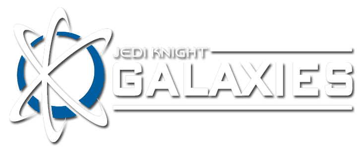

FAQ
Frequently Asked Questions
What is the game like?
Current gameplay is a Star Wars FPS shooter, with some alternative objectives (such as capture the flag). Earn credits by getting kills or completing objectives, then spend those credits on new equipment in the shop. Check out the gameplay video below which highlights some of the newer introduced features in v1.3:
Where can I get JKG?
Visit the download section of the site here!
How do I keep up to date with JKG?
There are a number of places to check other than this website. The easiest and most often updated is our Discord. Official announcements are also posted on the Forums. You can also find most of the game documentation, ideas, and roadmaps on the forums. If you're interested in the source code, you can find it on Github.
We also have a YouTube, ModDB, Twitch, and Facebook.
Which version should I install?
Most people will want to install the test release located at the bottom of the page as this will have the latest bug fixes and newest features and is updated the most often. Just keep in mind this is also usually the buggiest and most likely to crash. If you want a slightly more stable client, get the primary release instead. Most servers run the latest test release.
Do I need the map packs installed? / Server says I don't have the map?
Most servers run additional maps other than the default bespin map that comes with the client install. If you want to play on any of these servers you'll need the extra maps. You can technically play the game without the extra maps, but this usually isn't as fun. You can find the extra maps for JKG on the download page as Map Bundles/Packs. Additionally, server owners might install own custom maps - you would need to contact the server owner for those or see if they're available online from somewhere (like JKHub). For example, the Dev server sometimes uses the JKA Bonus maps (found here).
Is this a single player or multiplayer game?
Multiplayer. JKG will incorporate both solo and cooperative gameplay elements within a multiplayer environment as development proceeds; however, the current version of gameplay focuses on cooperative competitive multiplayer aspect. See below for a more detailed explanation of the game's vision and roadmap.
Can I beta-test JKG?
If you've downloaded the mod and tried it, you already are! But we will announce when we need testers for specific things when the need arises. We will usually announce this on the Discord when we need help, so come hang out with us there!
It seems hard to find other players online, where can I find a match?
Despite how great we think JKG is, we currently have a small, but broad following from many different regions in the world and it can sometimes be hard to find others to play with at the same time. As a result it is usually best to plan a time to play with others, rather than waiting for others to randomly join a server. That said, the developers often schedule community scrimmage match days to test out new features for upcoming releases or just to play for fun. These are announced on the Forums and in the Discord before they happen so you can set some time aside to play.
Other community members are also usually happy to play whenever they are given a chance, so if you feel like scheduling a match yourself let people know on Discord you want to play a match and they will usually join you for a game if they're around. If you join the 481st group in the Discord, you'll receive a notification anytime the community or devs plan a match. 'Smoo is our official dev server administrator, and can usually help host a game server if one is not currently running.
You can also visit the server list to view real-time information about the current number of players, number of servers, which map is currently loaded etc.
I found a bug, how do I report it?
First, thanks for your interest in improving JKG. To report a bug or issue, first check the Github issues list to make sure it hasn't already been reported by someone else. If you don't see it, feel free to make a report on the Forums or in the #bug-reports-and-crashlogs channel of the Discord. Screenshots or video are especially helpful if you're having trouble explaining the bug. If you are a programmer and you've discovered the cause of the bug, you can also open an issue on Github explaining it in detail (or submit a pull request if you're super awesome and fixed it yourself).
Who develops Jedi Knight Galaxies?
Jedi Knight Galaxies is a much loved hobby project created by developers who work on it in their freetime, with contributions from the community and volunteers. The current team and significant contributors can be found here.
How can I host a JKG Server?
First, thanks for your interesting in hosting a JKG server, each one helps us out. There are three different types of servers you can host:
- LAN Server - A local area network server, useful if you want to do a private LAN party with your friends at home.
- Home Hosted - A home hosted internet server, great if you have your own hardware and an ISP willing to let you host at home.
- Rented Server - An internet server hosted on the cloud by a provider such as Asutech, great if you don't want to worry about your own hardware or want to host a server in a different location.
Regardless of which type of server you plan to use, you may find
this JKG Server Setup guide useful.
What time period is JKG set in?
JKG is set in the time after Episode 3 and before Episode 6 at a currently vague date. Due to the presence of character models from base JKA it fits in around Episode 5 however the goal is to take place in and around the Dark Forces timeline, before Episode IV: A New Hope. JKG has its own canon to give ourselves creative freedom, but generally anything that occurred in the Prequel Trilogy or Original Trilogy movies (1-6) is considered canon, other material official Disney canon, extended universe, or otherwise may or may not be included.
What are these 'Phases' I've heard about?
A long time ago, JKG was meant to be a JKA port-mod of Star Wars Galaxies (it was originally called JKA Galaxies). The project went through a lot of changes, and we decided we wanted to make a LMO (Large Multiplayer Online) RPG (Role-Playing Game) FPS (First Person Shooter) with our own storyline. This is sort of the same ultimate goal, but instead of waiting to release it all at once we have decided to stagger it out into four phases of release. These are very much subject to change, especially phases later than Versus. Our roadmap looks like this:
Phase 1: Versus (current iteration)
The goal here is to have a functioning arena based shooter (similar to games such as Call of Duty or Unreal Tournament) with the beginnings of some later RPG elements such as armor, pazaak card game, etc. There are two major milestones currently being worked on. Milestone 3 includes new features like better melee, armor, shields, jetpacks, debuff system etc. Milestone 4 primarily focuses on the all new saber system and related features such as duel mode. Later milestones will introduce the skill trees and a rudimentary system for spending xp in preparation for the eventual leveling system in Phase 2 and 3. In Milestone 5, the Force will be reworked and greatly expanded on using the aforementioned skill tree system. We are currently on
[version] of this phase.
Phase 2: Coop
The main features that are added here include the NPC system and fleshing out of the dialogue system. They also include overhauls to the chat systems, fonts, UI, and more. Prep work for the leveling system and quest system to be introduced here. Gameplay will primarily consist of teams of players (or individuals) completing simple 'quest' objectives, while being opposed by NPCs, or other teams of players. The game will revolve around a major central city hub (likely Mos Eisley) from which player's can interact with NPCs and other players to start quests, form teams, and explore the world. Most quests that do not take part in the central city, will load a team of player's into an 'instance' where they will complete their quest objectives while isolated from other players not in their group. We may also attempt some MoBA like features (still needs discussion) in larger Phase 1 style matches.
Phase 3: RPG
Open World RPG. The main features added here include quests, (more) minigames, and AI for existing minigames, like Pazaak. Also includes levelling up, experience, single person quests, large planet-themed maps, character creator, fully fleshed out skill system etc. This mode will mainly focus on implementing things from a single player's perspective (within a multiplayer environment). Data will be persistent and exist as long as the server is running.
Phase 4: LMO
Features to the main game include group quests, Looking For Group system, and a lot of the dungeons that were designed for Phase 2 brought back. Includes a master server based architecture and functioning account system. Data is stored persistently, and official servers are all interconnected. At this point, the game is pretty much done.
Later possible expansions: space battles, more worlds, additional minigames, etc.
Do you have a roadmap or list of planned features somewhere?
JKG's development is changing all the time, but you can find out our plans here:
How can I help contribute?
We need your help! There are many ways to help contribute, the first is by beta testing the mod and giving us your feedback on the Forums or Discord. Sharing JKG with your friends also helps make it better, the more the merrier!
If you know how to code, map, model, animate, or do other types of game dev things you can also try modding JKG first to get a hang of how things work. Try creating a new weapon for example, then jump on the Discord and show off what you've done! If you feel you have time and talent to help, you could also join the developers and help us make the game even better, just let us know what you're interested in doing and show off some of your work and we'll be happy to direct you further. One of the easiest ways to start learning how the game works is to look inside zz_JKG_Assets5.pk3 -> ext_data where most of the game's settings and data are stored as json-like files that are easy to edit and read. You can find a guide to ext_data here.
If you're more of a coder, you could also try compiling the game yourself following the directions on the Github Readme and once you've got that down, maybe take a look at the issues list and see if you can help us fix one of them. JKG is written primarily in C and C++, and uses LUA for scripting.
What platforms will JKG be released on?
JKG is currently only supported on Windows; however, Linux builds are also available, but not as widely tested. OSX builds are not available at this time, but the game should work/build on OSX (up till Catalina).
Is Jedi Academy required in order to play?
Yes. To play JKG, you will first need Jedi Academy installed. You will need to make sure you have v1.01 of Jedi Academy installed to ensure you have all the assets required.
If you don't already own the game you can buy it from online stores such as Steam, Amazon, or GOG. It frequently goes on sale for less than $4 USD and is still quite fun. There are also many many mods available for Jedi Academy that make it well worth purchasing for more than just JKG.
What are the minimum requirements of the mod?
[loading...]
What happened to jkgalaxies.com?
Unfortunately, the domain expired and was bought out by a domain name troll/cybersquatter before we could acquire it from the original owner, Jake. It is now marked up considerably and in the hands of a domain name retailer who has no intention of parting with it cheaply. The site also fell into disrepair prior to that point, due to the annoyance of updating it constantly (we used Wordpress back then) and dealing with constant bot attacks. At that point, the domain name expired.
What happened to the launcher?
Its development has been delayed until further notice while we work on the main game. We will probably bring it back at some point when we are ready. Unfortunately, it had quite a few bugs when initially released and its code base is now quite old and so we need to update it quite a bit before it can be used again. Additionally, it required large amounts of bandwidths to use that were not practical for our small team to support financially, which is the primary reason we stopped using it.
Why don't you make JKG in a new modern engine like Unreal or Unity?
First, understand that JKG is a hobby passion project and is not intended to be a professional, (as in you pay money for it, and we make a profit off of it) large industry game. This means we work on it, because we enjoy it, not because we expect it to become a massive AAA title or because we expect monetary compensation. We expect it to be a free, open source game.
Second, know that we love Star Wars and this is very much a fan project, as such we don't really want to divorce the IP (Star Wars) from the game and create our own IP so that we could do the above mentioned.
Third, know that the Star Wars IP is protected by powerful guardian lawyers paid very well by The Mouse and they have been known to shut down Star Wars mod projects that strayed too far away from the legal side of the law. Because Jedi Knight Galaxies is a mod released under the original Jedi Academy modding licensing, it remains under the protection of the law granted by the original Jedi Academy game.
Fourth, understand that switching engines is a lot of work and would set us back months or even years of development and we simply don't think it is worth doing. Especially since we have the full source code of Jedi Academy to work with and can literally add whatever we want, new renderers, physics engines, game mechanics, etc. with enough effort.
How do I sprint?
Simply hold down the shift key while moving to sprint. Sprinting will drain your stamina, so carefully manage it so you have enough left over in an emergency. Remember that other resources, such as jumping, melee and rolling also use stamina.
Where are the lightsabers?
JKG's lightsaber system is still under development, it will initially be released with v1.4.0. Until then, sabers are only available through debugging via the console. We don't recommend playing with them yet, they're very unstable.
I bought some special ammo in the shop (such as shotgun slugs) how do I use them?
If you have a weapon capable of firing the special ammo type, you can use the ammocycle command (+ammocycle, the default binding is to n) to toggle between ammo types.
How do I use a jetpack?
After purchasing a jetpack make sure it is equipped to your ACI (press i to open your inventory and assign it to an ACI slot, they auto assign themselves upon purchase so this is probably not needed). Once equipped, you can press the use command (+use, the default binding is to e), while you are midair to activate it. Alternatively you can also tap the ACI key the jetpack is bound to to activate. Tap the key again to deactivate the jetpack.
There are different types of jetpacks, for example, the cheapest (and most difficult to control) are 'burst' jetpacks, which rapidly burn through a small fuel tank to provide a 'burst' jump. While your jetpack is activated you can also hold down shift to engage the turbo. Keep in mind this burns fuel even faster than normal. Be warned, if your jetpack runs out of fuel it will shut off in mid air! Jetpacks can also be disabled by certain types of ion damage. Note: Most jetpacks cannot be activated while you are carrying the flag in CTF mode.
How do shields work?
After a shield is assigned to your ACI, your shield will start charging after its cooldown has expired. Some shields do not have a cool down. The shield bar (visible in the upper left corner of the UI), shows how strong your current shield is at the present moment. Shields will act as a scapegoat for your health for certain types of damage. If your shield is damaged, it will stop charging until the cooldown for the recharge resets. If your shield is completely overloaded with damage (reduced to 0), you will be vulnerable to damage until it begins recharging.
Blue damage plums appear if you are damaged and the shield does its job of protecting your hp from damage. Please note that shields cannot protect you from all damage types. For example, slugthrowers or ACP can pierce through shields, and shields cannot protect you from fall damage or other similar circumstances.
How do I use melee or punch people?
You can enter melee mode, by pressing on an ACI key a weapon is currently bound to. For example, the starting pistol is often bound to slot 0, so pressing 0 will toggle melee mode. Tap 0 again to switch back to your gun. You can then punch people in melee mode by pressing the attack key (MOUSE 1). Special moves can be performed by a combination of MOUSE2 and MOUSE1, such as kicks.
How do I dodge?
If the server has enabled dodging, you can dodge by rolling at the precise time you're about to take damage. You can roll by pressing forward (w) then pressing the crouch (ctrl or c) key. Dodging will help negate damage, but cannot nullify it completely. A perfect dodge results in a reduction of more damage then one who's timing is off.
How do I play Pazaak with someone else?
You will need to bind the cmd "pzktest" to a key and then face another player and press that key. You can either open the console (~), and use the command:
/bind [key] pzktest
You may also use the ingame menu to select a binding for pazaak. This is not bound by default due to still being a beta feature.